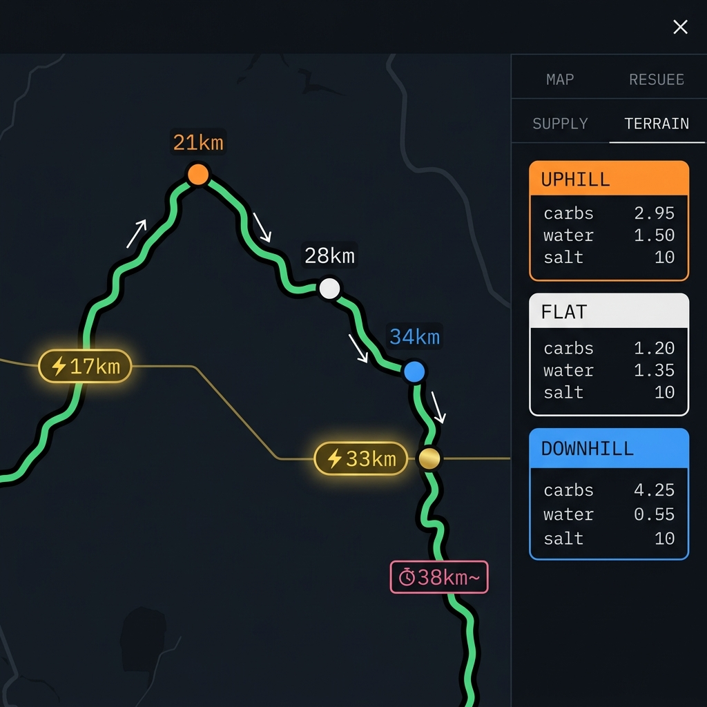
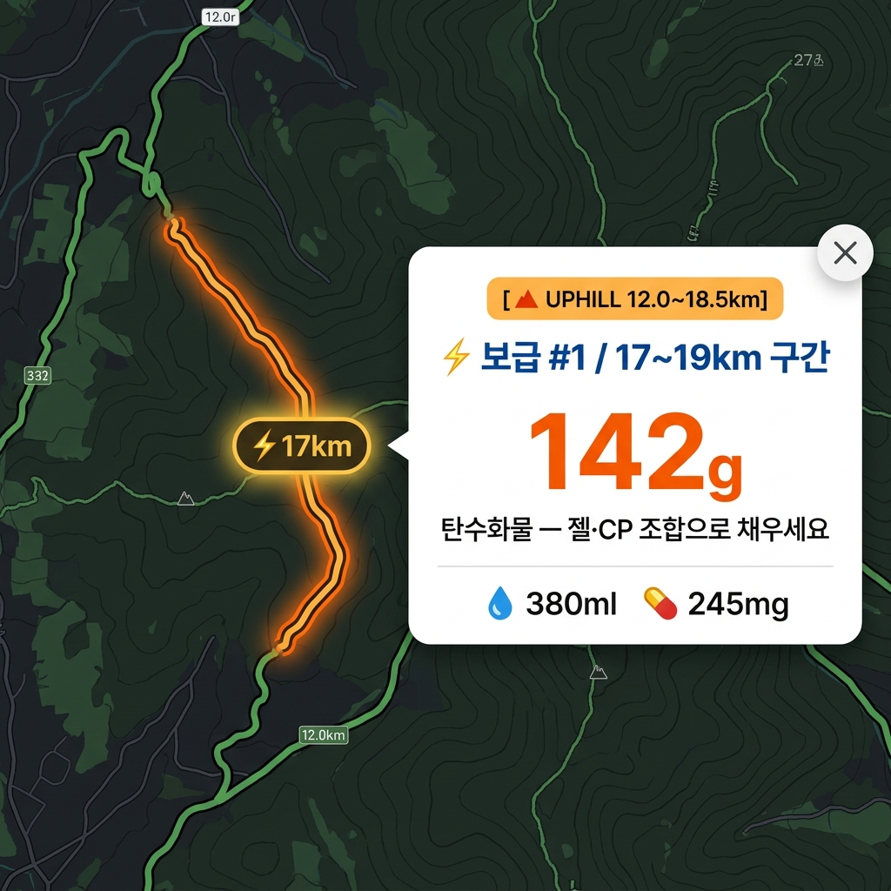
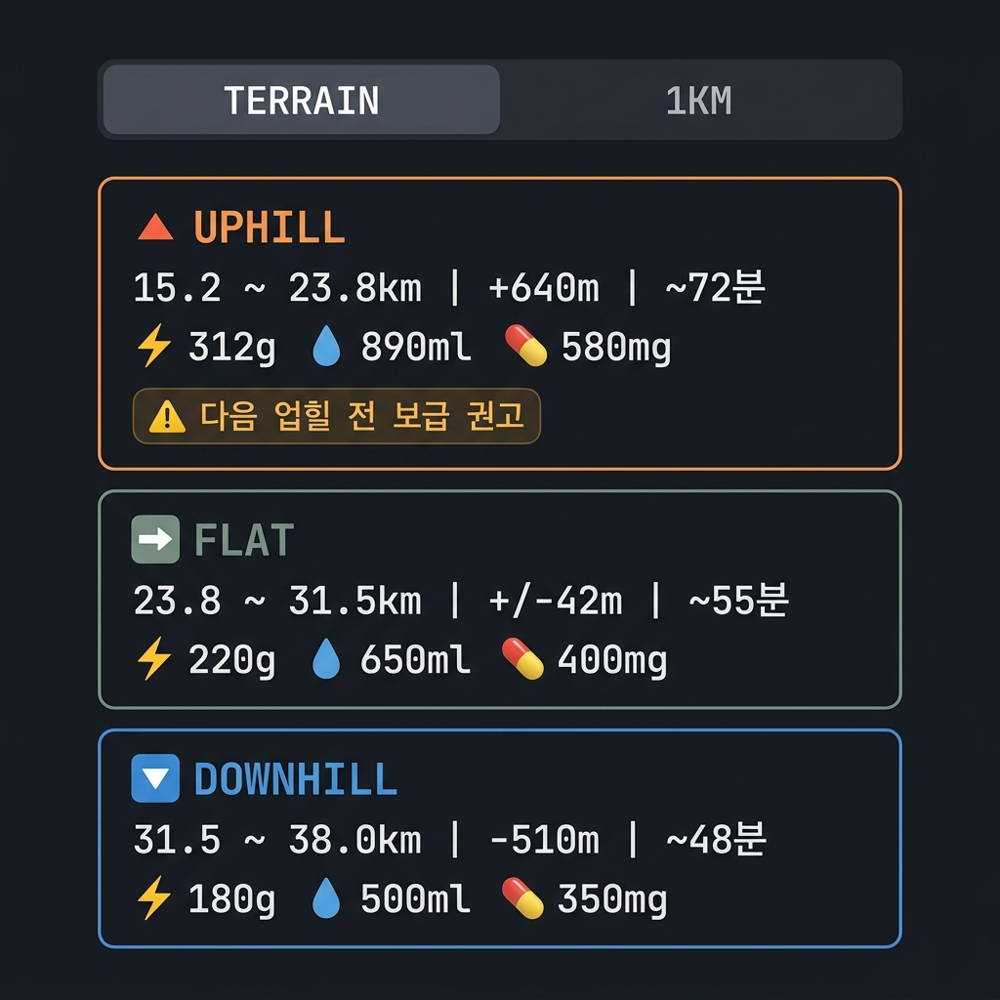

01 · Quick Start
5분 안에 전략 완성
1
GPX 파일 업로드
대회 공식 홈페이지 또는 Strava · Garmin Connect · Komoot에서 GPX 다운로드 →
01 GPX COURSE SOURCE에서 선택. 코스가 지도에 자동으로 그려집니다.2
목표 완주 시간 입력
02 TARGET FINISH TIME에 HRS · MIN · SEC 입력. 입력 즉시 예상 보급량이 실시간 업데이트됩니다.3
신체 정보 입력
체중(KG) · 기온 · 땀 분비율(SWEAT RATE) · 땀 염분(SALTINESS) 설정. 처음이라면 기본값 그대로 사용해도 충분합니다.
4
GENERATE STRATEGY 클릭
초록색 버튼 클릭 → 지도에 녹색 경로와 ⚡ 골드 보급 뱃지가 그려집니다. 모바일은 자동으로 지도 화면으로 스크롤됩니다.
5
마커 클릭 → 팝업 확인
⚡ 골드 뱃지 또는 지형 원형 마커를 클릭하면 해당 구간이 지형 색으로 하이라이트되고, 탄수화물 · 수분 · 전해질 수치가 팝업으로 표시됩니다.
6
계획 수립 & 내보내기
우측
TERRAIN 탭 카드 클릭 → 해당 구간이 지도에서 하이라이트됩니다. EXPORT (TERRAIN)으로 CSV 저장 후 레이스 노트로 활용하세요.
v10.35 지도 화면 — 녹색 경로(다크 할로) · 지형 원형 마커 · ⚡ 골드 보급 뱃지 · ⏱ LAST SUPPLY 태그 · 방향 화살표
02 · Map Guide
지도 읽는 법
녹색 경로
전체 코스 루트. 다크 외곽선(할로)이 적용되어 어떤 지도 배경에서도 선명하게 표시됩니다. 방향 화살표(▲ 금색)로 진행 방향을 확인하세요.
🔺 오렌지 마커 · km
UPHILL 구간
상승 구간 중간에 표시. 에너지 소모 최대 2.5배. 오르막 진입 전 보급이 핵심. 클릭하면 해당 업힐 전체가 오렌지색으로 강조됩니다.
상승 구간 중간에 표시. 에너지 소모 최대 2.5배. 오르막 진입 전 보급이 핵심. 클릭하면 해당 업힐 전체가 오렌지색으로 강조됩니다.
⬜ 흰색 마커 · km
FLAT 구간
평지 구간. 안정적인 페이스. 젤 인터벌에 맞춰 꾸준히 보급. 클릭하면 해당 구간이 흰색 하이라이트로 표시됩니다.
평지 구간. 안정적인 페이스. 젤 인터벌에 맞춰 꾸준히 보급. 클릭하면 해당 구간이 흰색 하이라이트로 표시됩니다.
🔽 블루 마커 · km
DOWNHILL 구간
하강 구간. 페이스는 빠르지만 에너지는 여전히 소모됩니다. 클릭하면 해당 구간이 블루로 강조됩니다.
하강 구간. 페이스는 빠르지만 에너지는 여전히 소모됩니다. 클릭하면 해당 구간이 블루로 강조됩니다.
⚡ 17km
필수 보급 포인트
에너지 예산이 임계치에 도달하는 지점. 여기서 안 먹으면 보네킹 위험. 클릭하면 해당 지형 구간이 색으로 강조되고 탄수화물 · 수분 · 전해질 수치가 표시됩니다.
에너지 예산이 임계치에 도달하는 지점. 여기서 안 먹으면 보네킹 위험. 클릭하면 해당 지형 구간이 색으로 강조되고 탄수화물 · 수분 · 전해질 수치가 표시됩니다.
⏱ 38km~
LAST SUPPLY — 마지막 보급 지점
이 지점 이후 섭취는 피니쉬 전 흡수 불가. 여기부터는 페이스 집중.
이 지점 이후 섭취는 피니쉬 전 흡수 불가. 여기부터는 페이스 집중.

⚡ 뱃지 클릭 시 팝업 — 지형 타입 · km 범위 · 탄수화물(g) · 수분(ml) · 전해질(mg) 표시. 해당 지형 구간이 색으로 하이라이트됩니다.
핵심 원칙: ⚡ 뱃지는 "반드시 먹어야 하는 위기 구간"입니다. 그 외 구간에서도 GEL 인터벌(km)마다 젤 1개씩 꾸준히 섭취해야 합니다.
03 · 숫자 읽는 법
오른쪽 패널 이해하기
🍚
PRE-START LOADING
출발 2~3시간 전에 미리 먹어야 할 탄수화물. 레이스 중 흡수 한계(85g/hr)를 초과하는 부족분을 미리 채우는 것. 흰쌀밥 · 떡 · 에너지바로 섭취하세요.
흰쌀밥 1공기 ≒ 55g / 바나나 1개 ≒ 27g / 에너지바 1개 ≒ 40g
흰쌀밥 1공기 ≒ 55g / 바나나 1개 ≒ 27g / 에너지바 1개 ≒ 40g
⚡
보급 뱃지 팝업
⚡ Nkm 뱃지 클릭 시 표시. 해당 보급 구간에서 소모되는 탄수화물(g) · 수분(ml) · 전해질(mg)을 보여줍니다. 젤과 CP 음식을 조합해 채우세요.
젤 1개 ≒ 24g / 스포츠음료 500ml ≒ 30g
젤 1개 ≒ 24g / 스포츠음료 500ml ≒ 30g
📋
TERRAIN 탭
UPHILL · FLAT · DOWN 지형별 블록마다 소모량 표시. 카드를 클릭하면 해당 구간이 지형 색으로 하이라이트되고 팝업이 표시됩니다. 지도가 자동으로 해당 위치로 이동합니다.
⏱
LAST SUPPLY
젤 25분 · 물 15분 · 전해질 20분의 흡수 시간을 역산한 마지막 유효 보급 지점. 지도에 핑크 아웃라인 태그로 표시됩니다. 이후 섭취는 피니쉬 전 흡수 완료가 안 됩니다.

TERRAIN 탭 — 업힐 · 평지 · 다운힐 구간별 탄수화물 · 수분 · 전해질 소모량. 카드 클릭 시 지도 연동 + 지형색 하이라이트.
04 · FAQ
이래서 이런 게 있어요
Q. 경로가 녹색 하나인데, 지형은 어떻게 구분하나요?
경로 자체는 녹색 단색으로 통일됩니다. 지형 구분은 경로 위의 원형 마커로 합니다 — 🟠 오렌지(업힐) · ⬜ 흰색(평지) · 🔵 블루(다운힐). 마커를 클릭하거나 우측 TERRAIN 탭 카드를 클릭하면 해당 지형 구간이 지형 색으로 강조됩니다.
Q. ⚡ 뱃지 숫자가 "17km"인데, 이게 구간 시작점인가요?
네. 보급을 시작해야 하는 km 지점입니다. 뱃지는 해당 km에 가장 가까운 GPS 포인트에 정확히 배치됩니다. 클릭하면 팝업에 전체 구간 범위(예: 17~20km)가 표시됩니다.
Q. 보급 마킹이 4개뿐인데 전체 필요량과 차이가 납니다.
⚡ 마킹은 에너지가 위험 수준으로 떨어지는 구간만 표시합니다. 마킹 외 구간에서도 GEL 인터벌마다 꾸준히 먹어야 합니다. 전체 필요량(예: 595g) = 프리로딩 + 마킹 구간 + 그 사이사이 섭취분 모두 합친 것입니다.
Q. 업힐에서 보급 마킹이 안 보이는데 먹지 않아도 되나요?
아닙니다. 업힐은 에너지 소모가 가장 큰 구간입니다. 보급 마킹은 업힐 직전 평지 · 다운힐에 표시되는 경우가 많습니다. 오르막 진입 전에 미리 먹어두는 것이 전략의 핵심입니다.
Q. 프리로딩이 600g이나 나오는데, 이게 다 밥인가요?
출발 2~3시간 전 식사로 탄수화물을 미리 저장하는 개념입니다. 흰쌀밥 1공기(≒55g) · 바나나(≒27g) · 에너지바(≒40g)를 조합하세요. 100km 이상 울트라에서는 600g 이상도 정상 수치입니다.
Q. ⏱ LAST SUPPLY 이후에는 정말 아무것도 먹지 말아야 하나요?
피니쉬까지 흡수가 완료되지 않으므로 효과가 없습니다. 단, 입이 너무 마르거나 물이 필요하다면 소량의 수분은 괜찮습니다. 에너지 보충이 목적인 젤 · 음식은 LAST SUPPLY 이전에 마무리하세요.
Q. 골드 뱃지 외에 원형 마커를 왜 클릭하나요?
원형 마커를 클릭하면 해당 지형 블록(업힐/평지/다운힐) 전체가 하이라이트됩니다. "이 오르막 구간이 얼마나 긴지, 얼마나 소모되는지"를 파악하는 데 사용하세요. 보급 전략을 짤 때 지형 마커와 ⚡ 뱃지를 함께 활용하면 효과적입니다.
Q. 계산값을 100% 믿어도 되나요?
학술 논문 기반의 합리적 추정치지만 개인차가 있습니다. 레이스 전 장거리 훈련에서 반드시 동일 전략을 테스트하세요. 위장 내성 · 젤 종류 · 수분 반응은 개인마다 다릅니다.
Q. 내 데이터가 저장·전송되나요?
아니요. 모든 처리는 내 브라우저 안에서만 이루어집니다. GPX 파일과 입력값은 서버로 전송되지 않습니다.
Q. GPX 파일은 어디서 구하나요?
대회 공식 홈페이지, 또는 Strava · Garmin Connect · Komoot에서 다운로드할 수 있습니다. 없다면 Strava 루트 탐색기에서 직접 그릴 수도 있습니다.
이 도구는 교육·훈련 목적의 시뮬레이션입니다. 의료적 조언을 대체하지 않습니다. 심혈관 질환, 신장 질환, 전해질 이상 병력이 있는 경우 전문의와 상담하세요.
05 · Science
왜 이 수치인가요?
📐
Minetti 2002
경사도별 에너지 소비 공식(GAP factor). 업힐은 평지보다 최대 2.5배 많은 에너지를 소모합니다. 보급 마킹 위치 계산에 적용됩니다.
🧬
Jeukendrup 2014
탄수화물 흡수 한계 85g/hr (젤+음료 혼합 시). 이 이상 먹어도 흡수가 안 됩니다. PRE-LOADING 필요량의 근거입니다.
💧
Sawka 2007
ACSM 수분 섭취 가이드라인. 기온 · 체중 · 발한량 기반 시간당 수분 필요량 계산.
🧂
Baker 2017
땀의 나트륨 농도 개인차 연구. 300~1800mg/L 범위, SALTINESS LV.1~10 스케일 기준.